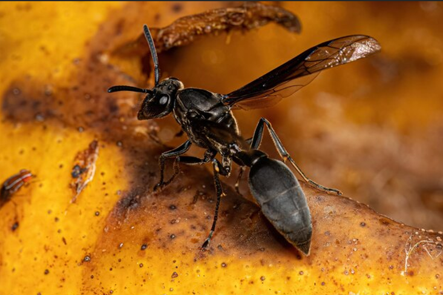

Es una avispa social de tamaño mediano, caracterizada por presentar una coloración predominantemente negra y alas membranosas. Forma colonias numerosas y construye sus nidos protegidos por una envoltura externa, generalmente en cavidades de árboles o estructuras. Es una especie depredadora que captura diferentes insectos, especialmente larvas de lepidópteros y moscas, contribuyendo al control natural de algunas poblaciones de insectos. Puede presentar un comportamiento defensivo agresivo cuando se siente amenazada